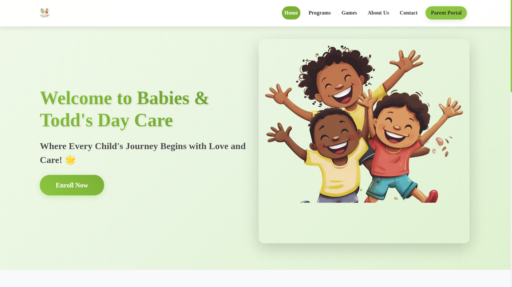
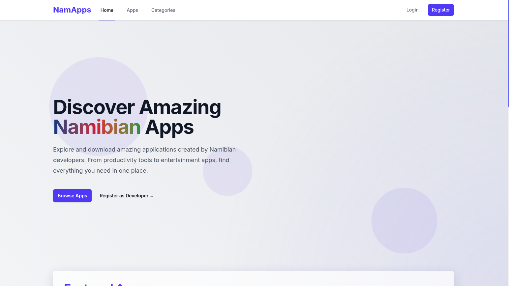

Proxmox Datacenter Lab Setup
Description:
Designed and implemented a fully functional Proxmox Virtual Environment (PVE) lab to simulate enterprise-grade datacenter operations. The setup was tailored for high availability, scalability, and performance optimization, with hands-on deployment of key virtualization and storage technologies.
Technologies Used:
Proxmox VE, CEPH Storage Cluster, LVM, ZFS, Backup & Restore (PBS), Debian Linux, QEMU/KVM, OpenVSwitch, Firewall, SSH, Monitoring (Netdata/Prometheus), and Ansible.
Role & Responsibilities:
- Virtualization: Configured multiple Proxmox nodes in a cluster setup for seamless resource sharing and virtual machine (VM) migration using QEMU/KVM and containers (LXC).
- CEPH Storage: Set up a 3-node CEPH storage cluster for highly available, distributed, and fault-tolerant block storage. Ensured replication, data redundancy, and monitored IOPS and utilization metrics.
- Networking: Implemented bonded NICs and VLAN tagging using OpenVSwitch for redundant network paths and optimized VM traffic.
- Backups & Restore: Integrated Proxmox Backup Server (PBS) for scheduled, encrypted, and deduplicated backups. Configured automated backup rotation and fast recovery for critical workloads.
- Automation & Scripting: Wrote shell scripts and used Ansible playbooks to automate VM deployments, system updates, and configuration backups across all nodes.
- Security: Hardened access with firewall rules, SSH key authentication, and Proxmox's built-in two-factor authentication.
- Monitoring & Alerts: Deployed Netdata and Prometheus/Grafana for real-time system health and performance monitoring. Setup custom alerts for node failures, storage thresholds, and backup statuses.

Description:
Designed and developed a vibrant, user-friendly, and fully responsive website for Babies & Todd's Day Care, a premier early childhood education center. The site highlights the school's values, programs, and admissions in a visually appealing and interactive way tailored to parents and guardians.
Technologies Used:
HTML5, CSS3, JavaScript, Responsive Web Design, Media Queries, Animated Elements, SEO optimization
Role & Responsibilities:
- UI/UX Design: Crafted a playful yet professional layout with animated components, soft color palettes, and engaging icons to appeal to parents and represent the day care's identity.
- Responsive Design: Built mobile-first layouts with smooth transitions and adaptive content for all screen sizes.
- Interactive Features: Integrated navigation with animated scrolls, clickable program sections (Toddlers, Infants, Preschool), and a dynamic admission form.
- Content Management: Structured pages for About Us, Our Programs, Admissions, Contact Us, and Principal's Dashboard for internal use.
- Performance Optimization: Compressed assets and applied best practices for faster load times and enhanced user experience.
- Ongoing Maintenance: Provided training and documentation for staff to manage content updates independently.

Description:
Developed a clean, fast, and modern website for NamApps, a platform showcasing software and mobile applications built for the Namibian market. The site is structured to support tech product launches, offer downloads, and serve as a digital catalog of apps and services developed under PurposeTech.
Technologies Used:
HTML5, CSS3, JavaScript, PHP (basic), Responsive Web Design, Product UI Design, SEO, Hosting & Domain Setup
Role & Responsibilities:
- Web Design & Branding: Created a minimalistic and elegant layout to reflect the innovative nature of NamApps, while ensuring brand consistency across all pages.
- Product Catalog: Structured product sections for apps, tools, and services — each with detailed descriptions, icons, and calls-to-action.
- Mobile Optimization: Applied responsive techniques and optimized layout for smartphone-first browsing, crucial for app-related audiences.
- Performance & Speed: Implemented lightweight code and image optimization techniques to ensure fast load times.
- Domain & Hosting: Handled domain setup, email configurations, and live deployment on a secure hosting environment.
- Ongoing Support: Offered periodic updates, UI refinements, and scaling options for future apps or ecommerce integration.